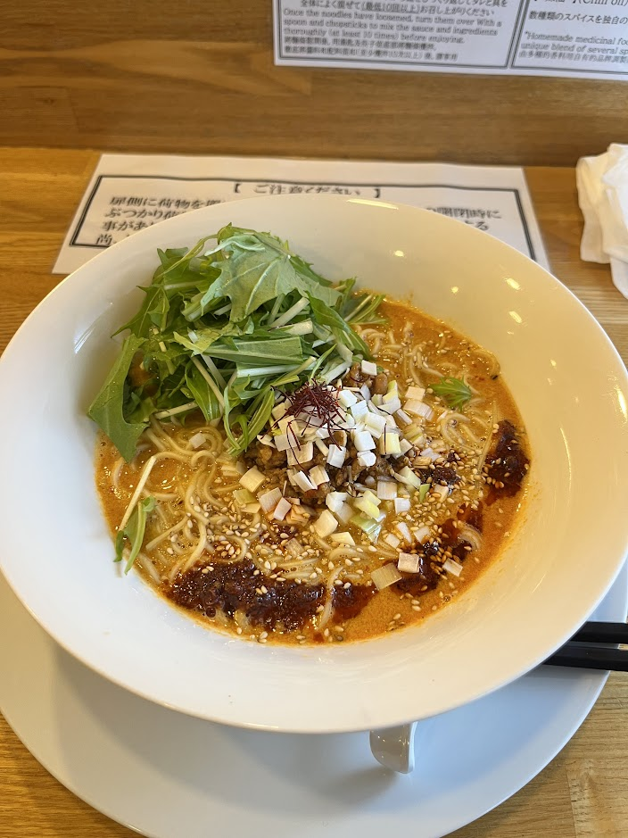

Menya Usagi - Tantan Zousui Set

- Price: ¥1230
- Rating: 8.75/10
- Last date I had it : 2025-01-18
- Review: tantanmen (based off the chinese dish dandanmian) is (technically) a ramen that adds a sesame sauce to the bowl of soup, serving a more sauce-like experience rather than the conventional soup that one is used to. This bowl has stirfried minced meat along w/ the sichuan-inspired chili oil featuring ma (numbness) and la (spicyness). Just based off this complex melody of flavors, and a low hydration noodle that maintains its firmness and doesn’t get soggy, I’d give an 8 already. HOWEVER, I think the star is truly the sauce+soup, and what’s great about the zousui set is that the bowl comes with rice and an onsen tamago (kinda like a poached egg). Once you finish the noods, you can add the rice and eggs into the soup and mix together, creating a spicy concotion that fully captures the spice, numbness, and umami from the soup. For this shime (conclusion), I give an increased score.